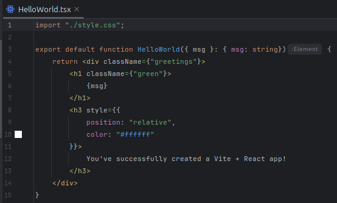
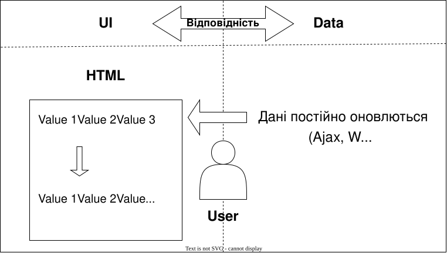
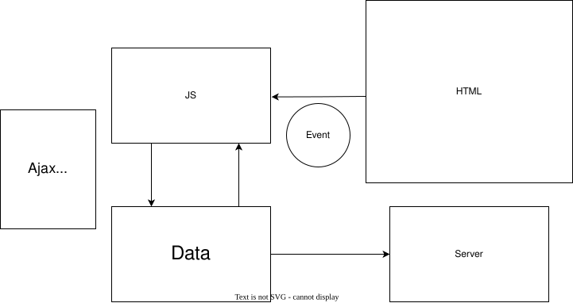

Лекція 5–6. React — Вступ та Основи
План лекції
- Що таке React? Основні поняття
- Компоненти, JSX, props, children
- Стан: useState, підняття стану
- Контекст (Context API)
- Глобальний стан: Redux Toolkit
- Маршрутизація: React Router
- Рендеринг списків, key, рендеринг об’єктів
- Підсумок
Що таке React?
React — це бібліотека JavaScript, створена для побудови користувацьких інтерфейсів. Вона працює на основі
HTML, CSS і JavaScript з можливістю декларативно описувати UI та створювати багаторазові компоненти.
Попри те, що React офіційно є саме бібліотекою, а не фреймворком, завдяки розвиненій екосистемі інструментів і
бібліотек
навколо нього він часто сприймається як повноцінний фреймворк.

Історія створення React
React був створений у 2013 році Джорданом Волком під час роботи у Facebook.
React виник через необхідність ефективного оновлення складних інтерфейсів та повторного використання
компонентів. З того часу React еволюціонував, став широко популярним і використовується в багатьох
великих вебзастосунках. Перший реліз відбувся у 2013 році, а документація та проєкт активно
підтримуються
спільнотою Facebook і open source.
Цікаві факти про React
React модульний, дозволяє використовувати лише потрібні частини бібліотеки, що робить її легкою і
ефективною.
React має велику й активну спільноту, яка надає розробникам багато ресурсів, таких як навчальні
посібники, плагіни та бібліотеки.
React використовується багатьма компаніями, включаючи Facebook, Instagram, Airbnb та Netflix, завдяки
його простоті використання та гнучкості.
Для чого використовують React?
Основні функції React: створення реактивних інтерфейсів, декларативний рендеринг, компонентна
архітектура, керування станом, маршрутизація.
React часто використовується для SPA, інтерактивних інтерфейсів і вебзастосунків з високою динамікою
даних.
React дозволяє створювати динамічні компоненти, що реагують на дії користувача.
Мала вага бібліотеки робить її легкою для інтеграції та масштабування у великих застосунках.
Бібліотека або Фреймворк?
Бібліотека – це набір попередньо написаних функцій для інтеграції у ваш проєкт. React — це
саме
бібліотека, яка допомагає будувати UI. Водночас завдяки великій екосистемі додаткових інструментів і
бібліотек (React Router, Redux, Next.js тощо) розробка з React часто відчувається подібною до роботи з
повноцінним фреймворком
Фреймворк є «шаблоном» для створення веб-додатку. Він забезпечує структуру, де можна розмістити
весь проект. «Шаблони» фреймворку створюють структуру з певними виділеними областями для вбудовування
коду, та знаходиться на більш високому рівні абстракції у порівнянні з бібліотекою.
Навіщо нам потрібен React?
- React надає змогу не писати щоразу заново одні й ті самі повторювані речі, а саме відображення даних,
реагування на кліки, зміни стану та інші взаємодії з інтерфейсом.
- React — це бібліотека, а не фреймворк. Це означає, що він не нав'язує жорстку архітектуру, а залишає
розробнику свободу у виборі додаткових інструментів і способів організації коду.
- React забезпечує нам розділення на компоненти (це дає змогу програмісту прицільно працювати над конкретним
вузлом системи навіть якщо він не розуміє та не усвідомлює роботу всієї системи).
-
React реалізує ключові концепції — декларативний підхід, віртуальний DOM і одностороннє зв'язування даних,
що робить роботу з інтерфейсами ефективною та передбачуваною.
Основні концепції
- Компоненти — повторно використовувані будівельні блоки
- JSX — синтаксис для опису розмітки в JavaScript
- Односторонній потік даних: props → компоненти
- Стан (state) — локальні дані компонента
- Virtual DOM — оптимізовані оновлення реального DOM
Компоненти - основні концепції React
Компоненти — це блоки, які дозволяють нам розділити інтерфейс користувача (UI) на незалежні частини, які
можна багаторазово використовувати, і думати про кожну частину окремо. Documentation.

Структура компонента React

- JSX (розмітка)
- JavaScript-логіка
- CSS/стилі
У React немає єдиного файлу з розділами, як у Vue SFC.
Зазвичай розмітка (JSX) та логіка знаходяться в одному файлі
.jsx або .tsx, а стилі — в окремих CSS/SCSS файлах
чи у вигляді CSS-in-JS.
JSX. Робота з компонентами в React
Інтерполяція
У React для підстановки значень у розмітку
використовується синтаксис фігурних дужок:
Повідомлення: {msg}
Вираз у дужках { } буде замінено значенням
змінної msg. Якщо значення зміниться,
React автоматично виконає повторний рендеринг
компонента з оновленими даними.
JSX. Робота з компонентами в React
children (ReactNode)
У React елементи та навіть фрагменти HTML можна передавати як
children. Це значення автоматично інтерпретується як JSX
і безпечно вставляється у розмітку:
function Wrapper({ children }: {children: ReactNode}) {
return <div className="box">{children}</div>
}
<Wrapper>
<p>Це передано як children</p>
</Wrapper>
JSX. Робота з компонентами в React
children (ReactNode)
<Wrapper>
<p>Це передано як children</p>
</Wrapper>
У цьому прикладі <p>-елемент передається в компонент Wrapper
як children і відображається всередині нього.
Так можна вкладати будь-які JSX-елементи.
JSX. Робота з компонентами в React
Атрибути
У React значення для HTML-атрибутів вставляються в фігурних дужках:
<div id={dynamicId}></div>
{/* dynamicId - це змінна або вираз, який визначає id */}
Якщо значенням dynamicId буде null, undefined чи false, то атрибут
id не додасться до елемента <div>
JSX. Робота з компонентами в React
Використання виразів JavaScript
Поки ми пов'язували дані з
властивостями у JSX лише за
простими ключами. Однак насправді
при зв'язуванні даних React підтримує
всю потужність виразів JavaScript:
{ number + 1 }
{ ok ? 'YES' : 'NO' }
{ message.split('').reverse().join('') }
<div id={"list-" + id}></div>
<div id={`list-${id}`}></div>
Props і children
Props — властивості компонента, children — вкладений JSX, який передається як вміст.
function Card({title, children}: {title: string; children?: React.ReactNode}) {
return (
<div className="card">
<h3>{title}</h3>
<div>{children}</div>
</div>
);
}
Стан (State) — локальні дані компонента
State — локальні дані компонента. Зміни стану викликають повторний рендеринг компонента.

useState (TypeScript)
Хук для локального стану в функціональних компонентах.
import React, {useState} from 'react';
function Counter(): JSX.Element {
const [count, setCount] = useState<number>(0);
return (
<div>
<p>Поточний рахунок: {count}</p>
<button onClick={() => setCount(prev => prev + 1)}>+1</button>
</div>
);
}
export default Counter;
Підняття стану (Lifting state up)
Коли два або більше компонентів потребують спільних даних — перемістіть стан у їхнього спільного батька та
передайте оновлювачі через props.
function Parent() {
const [value, setValue] = useState<string>('');
return (
<div>
<Input value={value} onChange={setValue} />
<Preview value={value} />
</div>
);
}
Context API — вирішення prop drilling
Context дозволяє передавати дані через дерево компонентів без явного прокидування props на кожному рівні.
// theme-context.tsx
import React, {createContext, useContext, useState} from 'react';
type Theme = 'light' | 'dark';
const ThemeContext = createContext<{theme: Theme; setTheme: (t: Theme) => void} | undefined>(undefined);
export function ThemeProvider({children}: {children: React.ReactNode}){
const [theme, setTheme] = useState<Theme>('light');
return (
<ThemeContext.Provider value={{theme, setTheme}}>{children}</ThemeContext.Provider>
);
}
export function useTheme(){
const ctx = useContext(ThemeContext);
if(!ctx) throw new Error('useTheme must be used within ThemeProvider');
return ctx;
}
Використання Context
// 1️⃣ Створення контексту
import React, { createContext, useContext, useState, ReactNode } from 'react';
type ThemeContextType = { theme: 'light' | 'dark'; setTheme: (theme: 'light' | 'dark') => void; };
const ThemeContext = createContext<ThemeContextType | undefined>(undefined);
export const ThemeProvider: React.FC<{ children: ReactNode }> = ({ children }) => {
const [theme, setTheme] = useState<'light' | 'dark'>('light');
return (
<ThemeContext.Provider value={{ theme, setTheme }}>
{children}
</ThemeContext.Provider>
);
};
// 2️⃣ Використання контексту
export const useTheme = () => {
const context = useContext(ThemeContext);
if (!context) throw new Error('useTheme must be used within ThemeProvider');
return context;
};
// 3️⃣ Використання провайдера у додатку
function App(){
return (
<ThemeProvider>
<Toolbar />
</ThemeProvider>
);
}
// 4️⃣ Компонент, що споживає контекст
function Toolbar(){
const { theme, setTheme } = useTheme();
return (
<div>
<span>Поточна тема: {theme}</span>
<button onClick={() => setTheme(theme === 'light' ? 'dark' : 'light')}>
Toggle
</button>
</div>
);
}
Коли Context недостатньо?
Context підходить для тем, локальної конфігурації, сесійних даних. Для складних станів з багатьма редюсерами,
складною логікою та middleware краще використовувати Redux, Zustand, Recoil або інші менеджери стану.
Redux Toolkit - Ключові поняття
-
Slice — це логічний модуль стану, який містить:
початковий стан (
initialState),
редʼюсери (функції, що змінюють стан)
Аналог окремого “підрозділу” стану, наприклад: користувачі, кошик, повідомлення.
-
Store — це єдине джерело глобального стану програми:
зберігає всі слайси,
передає стан компонентам через
<Provider>,
підтримує middleware та DevTools.
Центральний “контейнер” даних додатку.
-
Middleware — це функції, які перехоплюють дії (actions)
перед тим, як вони потрапляють до редʼюсерів.
використовуються для логування, запитів, обробки асинхронності,
додаються через
middleware у configureStore().
“Проміжний шар” між діями та змінами стану.
Redux Toolkit — повний приклад
Redux Toolkit надає готові інструменти для створення слайсів, стору та мідлверів — мінімум коду, максимум зручності.
// 🧩 features/counter/counterSlice.ts
import { createSlice, PayloadAction } from '@reduxjs/toolkit';
interface CounterState { value: number }
const initialState: CounterState = { value: 0 };
const counterSlice = createSlice({
name: 'counter',
initialState,
reducers: {
increment(state) { state.value += 1 },
add(state, action: PayloadAction<number>) { state.value += action.payload }
}
});
export const { increment, add } = counterSlice.actions;
export default counterSlice.reducer;
Налаштування store з middleware
// 🏪 app/store.ts
import { configureStore } from '@reduxjs/toolkit';
import counterReducer from '../features/counter/counterSlice';
// простий логер для демонстрації роботи middleware
const loggerMiddleware = (storeAPI: any) => (next: any) => (action: any) => {
console.log('dispatching', action);
const result = next(action);
console.log('next state', storeAPI.getState());
return result;
};
export const store = configureStore({
reducer: {
counter: counterReducer
},
middleware: (getDefaultMiddleware) =>
getDefaultMiddleware().concat(loggerMiddleware),
});
// Типізація для використання у хуках
export type RootState = ReturnType<typeof store.getState>;
export type AppDispatch = typeof store.dispatch;
Використання у компоненті
// ⚛️ Counter.tsx
import React from 'react';
import { useSelector, useDispatch } from 'react-redux';
import { RootState, AppDispatch } from '../app/store';
import { increment, add } from '../features/counter/counterSlice';
export function Counter() {
const value = useSelector((state: RootState) => state.counter.value);
const dispatch = useDispatch<AppDispatch>();
return (
<div>
<p>Лічильник: {value}</p>
<button onClick={() => dispatch(increment())}>+1</button>
<button onClick={() => dispatch(add(5))}>+5</button>
</div>
);
}
Підключення store до React
// 🧠 index.tsx
import React from 'react';
import ReactDOM from 'react-dom/client';
import { Provider } from 'react-redux';
import { store } from './app/store';
import { Counter } from './components/Counter';
ReactDOM.createRoot(document.getElementById('root')!).render(
<React.StrictMode>
<Provider store={store}>
<Counter />
</Provider>
</React.StrictMode>
);
React Router — навігація
React Router дозволяє визначати маршрути у SPA та працювати із URL.

React Router (TypeScript) — приклад
// App.tsx
import {BrowserRouter, Routes, Route, Link, useParams, useNavigate} from 'react-router-dom';
function Home(){ return <h2>Головна</h2> }
function About(){ return <h2>Про</h2> }
function User(){
const {id} = useParams() as {id?: string};
const navigate = useNavigate();
return (
<div>
<h2>Користувач: {id}</h2>
<button onClick={() => navigate('/')}>На головну</button>
</div>
);
}
function App(){
return (
<BrowserRouter>
<nav>
<Link to="/">Home</Link> | <Link to="/about">About</Link>
</nav>
<Routes>
<Route path="/" element=<<Home />> />
<Route path="/about" element=<<About />> />
<Route path="/user/:id" element=<<User />> />
</Routes>
</BrowserRouter>
);
}
export default App;
Умовний рендеринг
У React умовний рендерінг — це спосіб відображати або
приховувати елементи залежно від певних умов (змінних, стану, пропсів тощо).
Ідея в тому, що JSX дозволяє вставляти JavaScript-вирази в фігурних дужках {}.
Основні способи умовного рендерінгу:
- Через логічний оператор
&&
- Через тернарний оператор
? :
- Через умовний рендер у функції
Умовний рендеринг
Через логічний оператор &&
Використовується, коли потрібно показати елемент лише за певної умови:
function Greeting({ isLoggedIn }: {isLoggedIn: boolean}) {
return (
<div>
{isLoggedIn && <p>Вітаємо користувача!</p>}
</div>
);
}
Якщо isLoggedIn = true, елемент <p> буде відображено. Якщо false —
нічого не рендериться.
Умовний рендеринг
Через тернарний оператор ? :
Коли потрібно вибрати між двома варіантами:
function Greeting({ isLoggedIn }: {isLoggedIn: boolean}) {
return (
<div>
{isLoggedIn
? <p>Вітаємо користувача!</p>
: <p>Будь ласка, увійдіть</p>}
</div>
);
}
Умовний рендеринг
Через умовний рендер у функції
Можна визначати змінні всередині функції компонента:
function Greeting({ isLoggedIn }: {isLoggedIn: boolean}) {
let message;
if (isLoggedIn) {
message = <p>Вітаємо користувача!</p>;
}
else {
message = <p>Будь ласка, увійдіть</p>;
}
return <div>{message}</div>;
}
Умовний рендеринг
Пам'ятка:
У JSX не можна використовувати блок if прямо всередині дужок {},
але можна через тернарник або логічний оператор.
Всі умови обчислюються як JavaScript, і DOM автоматично оновлюється,
коли змінюється state (стан) або props (властивість).
Рендеринг списків
У React для відображення списку елементів на основі масиву даних використовується метод
map().
map() — це стандартний метод масиву JavaScript.
Він проходить по всіх елементах масиву і створює новий масив, який повертається.
У нашому випадку ми створюємо масив JSX-елементів <li>.

items[0] = "Яблуко" → <li key={0}>Яблуко</li>
items[1] = "Банан" → <li key={1}>Банан</li>
items[2] = "Вишня" → <li key={2}>Вишня</li>
Рендеринг списків
Атрибут key
Це спеціальний атрибут,
який використовується для унікальної ідентифікації елементів списку.
key потрібен лише для списків елементів
Він не передається в компоненту як атрибут,
а використовується внутрішньо React для оптимізації.
items[0] = "Яблуко" → <li key={0}>Яблуко</li>
items[1] = "Банан" → <li key={1}>Банан</li>
items[2] = "Вишня" → <li key={2}>Вишня</li>
Рендеринг об'єктів
У React об’єкт безпосередньо рендерити не можна,
бо JSX очікує рядок, число або елемент.
Тому треба перетворити об’єкт на щось відображуване. Є кілька способів:
- Рендерити окремі властивості
- Використовувати
Object.entries() + map() для всіх властивостей
Рендеринг об'єктів
Рендеринг окремих властивостей
Найпростіший і найпоширеніший спосіб — взяти поля об’єкта і вставити їх у JSX:
Плюс: легко форматувати, можна додавати HTML-структуру.
Рендеринг об'єктів
Object.entries() + map()
Найкраще підходить якщо полів багато або вони динамічні:
Object.entries(book) → масив [["title","The Book"], ["author","John Doe"], ...].
map() → створює список <li> для кожної властивості.
key → унікальний ключ для React (тут можна використовувати ім’я поля).
Умовний рендеринг елементів списку
При рендерингу списків у React можна застосовувати умовний рендеринг для окремих елементів. Це робить
списки більш гнучкими та динамічними, адже будь-які зміни автоматично відображаються
в DOM.
Налаштування середовища для розробки
-
Documentation.
-
Швидко спробувати React можна в онлайн-пісочницях:
-
Створення застосунку React на локальному комп'ютері (Передумови: Node.js версії 20 або новіша).
Сучасний підхід полягає у використанні збірки Vite, яка дозволяє швидко створити новий проєкт із готовим
шаблоном для React або React + TypeScript.
Вибір IDE/редактора коду
- WebStorm
- Visual Studio Code
- Visual Studio Community
Vanilla JS vs React
Приклади у директорії examples
Vanilla JS vs React
React спрощує роботу з DOM завдяки концепції Virtual DOM та декларативному рендерингу компонентів.
У чистому JavaScript потрібно вручну додавати слухачі подій і оновлювати DOM, тоді як у React оновлення
інтерфейсу відбувається автоматично при зміні стану (state) або властивостей (props),
що робить код більш передбачуваним і чистим.
React використовує одностороннє зв'язування даних, де зміни в інтерфейсі обробляються через події, які оновлюють
стан, що полегшує контроль над даними і налагодження застосунку.
React+Vite+TypeScript (Recommended)
Для створення сучасного React-застосунку рекомендується використовувати Vite як збірку.
Vite забезпечує швидкий старт проекту та миттєву заміну модулів (HMR), надаючи значно кращий досвід розробки у
порівнянні зі старими підходами.
Сам Vite виступає як інструмент для scaffold'у: він створює попередньо налаштований проект на основі обраних
опцій, а весь процес збірки та плагіни керуються Vite, що дозволяє легко інтегрувати екосистему Rollup-сумісних
плагінів.
Порівняльна таблиця React х VueJS
| Параметр |
React |
Vue.js |
| Тип |
Бібліотека |
Фреймворк |
| Рендеринг |
JSX, декларативний |
Шаблони, декларативний |
| Зв’язування |
Одностороннє |
Двостороннє |
| Компоненти |
Функц./клас. |
SFC |
| Virtual DOM |
Так |
Так |
| Стан |
useState/useReducer, Redux |
data, Vuex/Pinia |
| Крива навчання |
Середня, JSX та розуміння екосистеми |
Легка, шаблони схожі на HTML |
Поради та шаблони
- Підтримуйте компоненти малі та сфокусовані
- Виносьте логіку у кастомні хуки
- Використовуйте TypeScript для типізації пропсів і стану
- Context — для конфігурації/теми; Redux — для складного глобального стану